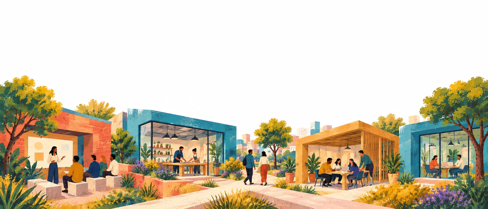

Propel | Turn your technology into something people use
Community-as-a-Service
Turn your technology into something people use.
Propel recruits through trusted communities and runs programmes that help learners, creators, practitioners and developers learn your technology, build with it, test products and contribute specialist expertise.
Discuss your programmeSee our work

Start here
What do you need people to do?
01
Build skills
Recruit and support people through practical learning.
Building got dramatically easier. Reaching people didn’t.
AI turned months of building into days. But every product, programme and model still needs people – to use it, test it, learn it and improve it. That part hasn’t sped up.
What it takes to launch, over time · illustrativeBuildingReaching people
The distribution gap
Before AIToday
Building – code, content and models now ship in days, not months.
Reaching people – adoption, evaluation and participation still move at human speed, rebuilt programme by programme.
What we do
Engagement and activation, at scale.
We deploy ecosystem infrastructure to help companies achieve their product, people, growth and distribution goals.
You usually know who you need. Getting to them is the slow part. Propel finds them through communities they already trust, and runs the work from there.
01Relevant accessAudiences that generic acquisition struggles to recruit.Mastercard Foundation: 114,000+ registrations across Nigeria and Kenya.
02Supported participationPeople keep progressing after the invitation.Mastercard Foundation: 37,000+ course completions.
03Local executionDelivery shaped around language, partners and place.Google AI Skills Training: community recruitment, cohorts and facilitator-led workshops in Portugal.
04Useful evidenceCompleted work and agreed outcomes, reported plainly.Hedera: 1,400+ project submissions.
Our ecosystem
Every community in the Propel ecosystem is pre-vetted and highly engaged. Every member undergoes skill verification and KYC assessment – so when you engage, you're working with professionals, not just profiles.
KYC verifiedGovernment-ID checked
Skill verifiedWork-sample assessed
Globally structured30 countries, 6 regions
Actively engagedWeekly programming
Explore the ecosystemJoin the ecosystem
Countries represented
30
Women & non-binary members
38%
Community archetypes
14
Top 5 skills in our ecosystem% of members
01Full-stack engineering28%
02Product design / UX19%
03Data & ML engineering16%
04DevOps & platform12%
05Product management9%
Seniority splitacross the ecosystem
Junior 28%
Mid-level 44%
Senior 28%
Engagement options
Ways to work with us.
Most clients start with a pilot. We agree the scope and how we'll measure it before anything begins.
Most common start
A focused project
A specific question, test cycle or pilot with a defined finish.
Example
A product test or a practitioner workflow pilot.
You receive
Recruited participants, completed tasks and a findings summary.
Your team supplies
Product access, the questions to answer and review criteria.
Next phase
Review the findings together and decide whether to extend.
A complete programme
A coordinated pathway with several stages.
Example
Supported AI learning for a defined audience and market.
You receive
A recruited, supported cohort, progress reporting and a final report.
Your team supplies
Curriculum or product content, access and review standards.
Next phase
Agreed at review: scale to new markets or move to ongoing support.
Continuing activation
A planned series of activities over time.
Example
Recurring clinics, champion support and participation reviews.
You receive
An activity calendar, participant coordination and a report each cycle.
Your team supplies
Priorities, expert time and a named lead.
Next phase
Reviewed each cycle, with scope adjusted by agreement.
Get started
Start a conversation
Tell us what you want people to do. We'll show you how we'd run it.